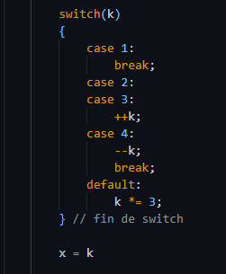

Ejercicios
| Capítulo VIII
Miguel Conde Luis | 197O01086
8.13
Ejercicio | Dada la siguiente instrucción switch.

¿Qué valores se asignan a x cuando k tiene valores de 1,2,3,4 y 10?
Cuando k es 1:
case 4: x = 2
case 5: x = 0
default: x = 3
Cuando k es 2:
case 4: x = 3
case 5: x = 1
default: x = 6
Cuando k es 3:
case 4: x = 4
case 5: x = 2
default: x = 9
Cuando k es 4:
case 4: x = 5
case 5: x = 3
default: x = 12
Cuando k es 10:
case 4: x = 11
case 5: x = 9
default: x = 30